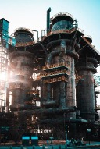

Un exemple remarquable de transformation industrielle à Beijing

Shougang Park est un parc culturel et industriel situé à l’ouest de Beijing. Il était autrefois le site de la grande usine sidérurgique de Shougang Group, fondée au début du XXᵉ siècle.
Avec le développement de la ville et les préoccupations environnementales, l’usine a progressivement cessé sa production. Le site industriel a ensuite été rénové et transformé en un espace culturel, touristique et technologique moderne, tout en conservant ses structures industrielles historiques.
Aujourd’hui, Shougang Park est connu pour son architecture industrielle unique. Les anciens hauts fourneaux, les réservoirs et les bâtiments industriels ont été préservés et transformés en musées, centres d’exposition et espaces créatifs.
Ce mélange entre patrimoine industriel et design moderne crée un paysage urbain très particulier. Les visiteurs peuvent s’y promener, prendre des photos et découvrir comment un ancien site industriel peut être réutilisé de manière innovante.
Shougang Park est également devenu un centre important pour les activités culturelles et sportives. Pendant les Jeux olympiques d’hiver de 2022, certaines compétitions comme le Big Air de snowboard et de ski freestyle y ont été organisées.
Aujourd’hui, le parc accueille régulièrement des expositions, des événements culturels, des activités sportives et des festivals. Il est ainsi devenu un symbole de la transformation urbaine de Beijing et un nouveau lieu populaire pour les habitants et les touristes.